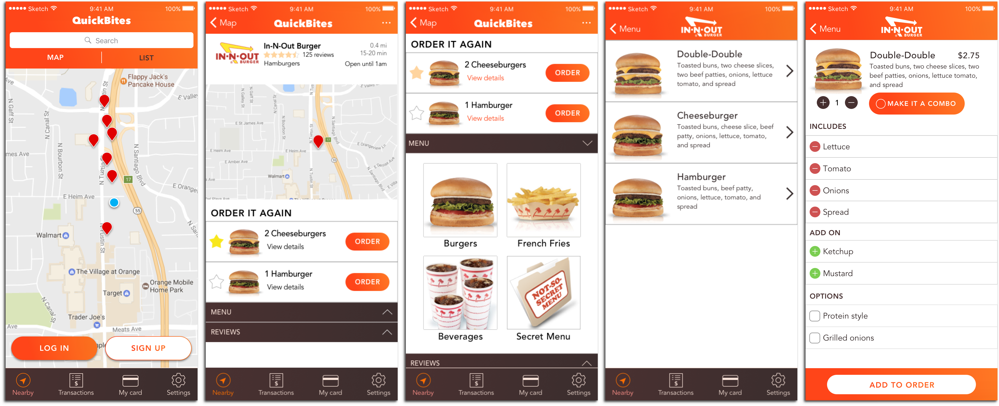

Overview
As easy as it is to buy fast food, there are a lot of frustrations that I’ve experienced with it. Figuring out my order in the drive through can be stressful, sometimes my order gets messed up, and going to a restaurant only to find that the drive through line extends out the parking lot is the worst. I think a lot of these problems could easily be solved with an app, so I designed one.
User Research
What is your biggest challenge with ordering fast food?
This result was much different than my expectation. I thought answers would be varied and if anything more focused on the actual ordering process.
What would make the ordering process easier?
Users who wanted easier communication mentioned communication with server, issues with speakers, and getting other people's orders. Those who said improved menus wanted menus with pictures and simpler menus.
User Stories
Referencing my research, I gathered user stories that would become the core of this app.
As a user, I want to view restaurants near me or a location I input.
As a user, I want to select a restaurant, see details, and view a menu.
As a user, I want to select items and purchase them using my phone.
As a user, I want to customize an item I select to my liking.
As a user, I want to rate and review a restaurant.
As a user, I want to create an account.
As a user, I want to view my transactions.
Mockups
